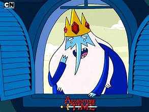

Adventure Time Characters
Finn the Human
Finn is voiced by: Jeremy Shada
Finn the Human is the adventurous and brave protagonist of Adventure Time, known for his iconic white bear-eared hat and boundless energy. He is a 17-year-old human living in the post-apocalyptic Land of Ooo, where he embarks on quests to help others and fight evil. Finn is compassionate, loyal, and often guided by a strong moral compass, though he can be impulsive and occasionally naive. His best friend and adoptive brother, Jake the Dog, is often by his side. Finn’s sense of heroism and courage drives him to seek out adventures, battle monsters, and protect his friends, though he also grapples with his own identity and the mysteries of his past.
Ice King
Ice King is voiced by: Tom Kenny
The Ice King, formerly known as Simon Petrikov, is a complex and tragic character in Adventure Time. He is an ancient, magical being with a long white beard and an icy crown that gives him control over ice and snow. Once a kind and loving archaeologist, Simon was transformed into the Ice King after his mind was slowly overtaken by the crown’s corrupting power. Despite his villainous appearance and attempts to capture princesses, the Ice King is often more lonely and misunderstood than truly evil. He craves companionship and frequently shows vulnerability, hinting at the tragic loss of his former self and his deep-seated desire for connection.